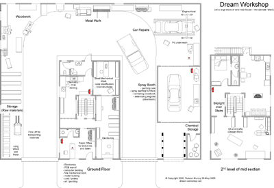

| webdesign | food | virtual | lifecube | about | links | house | gadgets |
A place to discuss gadget ideas, electronic devices, design tips

A shed is essential for building stuff, fixing bikes, etc but when you like trying lots of different things it can get very crowded and often you get wood chips mixed in with your electronics project and vice versa.
So I thought what would be my idea workshop, it takes into account the various 'areas' you work on and tries to keep them separate.
A large U shape driveway goes through it, so deliveries are not a problem and that space would be used otherwise for building big projects. It starts with the storage area for wood, metal, etc and then is the Wood and Metal areas as these create the most devris and dust. On the far side is the car workshop and even a spray booth which can be car painting, furniture varnishing or any other clean room task. Chemicals are stored out of the way in a separate fire proof (hopefully) room.
The whole building is 2 stories high , and the building in the centre is for smaller work. The first floor doubles as a shop front (or office), and also has rooms for chemistry work, robot building and electronics work. The 2nd floor has a kitchen and a bed if you want to sleep after a long session, but is mostly taken up with a craft / art area (including workstation).
What would you have in your dream workshop?
{kind=link}